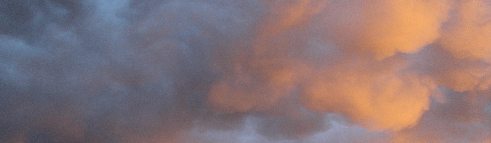
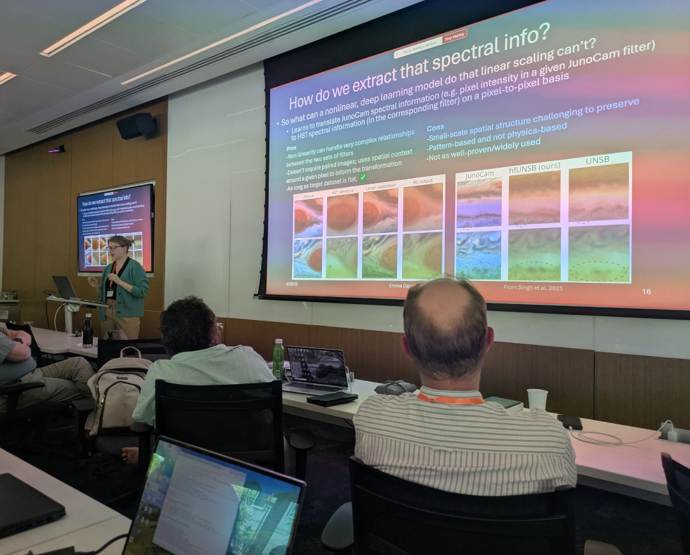

Aerosols in the Solar System

Since ~2022, I have been closely involved with efforts at JPL to build the Planetary Cloud and Aerosol Research Facility (PCARF), including helping arrange and providing overview talks at the annual PCARF-hosted Aerosol Workhops at Caltech. Over the last ~1.5 years, I have been leading a huge effort to write a review paper (which will eventually be split into 2 volumes) that covers our current understanding and analysis of aerosols throughout the Solar System. The papers will cover the state of knowledge of aerosols on planets and moons, observational methods, laboratory experimental setups, and modeling efforts, and the paper currently stands at ~40 co-authors from ~20 institutions. The authorship spans several different countries and is almost at 50% early career, and leading such a large and diverse group of interdisciplinary scientists has been a challenging but highly rewarding experience. The focus of the paper is the current set of open questions and outstanding knowledge gaps from each of these aspects of aerosol science in the hope that the review papers will be useful resources for anyone hoping to either 1) catch up on the state of knowledge or 2) make it easier to write a proposal to address some of those open questions. We currently have a complete draft and are working towards a submittable draft by the end of Summer 2026. Click here for a presentation I gave at AGU 2025 on the state of the paper(s) and PCARF's community organization efforts.

Above: giving a talk on Jupiter's atmosphere at the 2025 Earth and Planetary Cloud Workshop at Caltech.